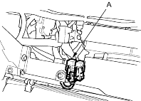
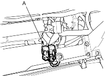
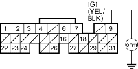

- Inspect the No. 17 FUEL PUMP (15A) fuse in the under-dash fuse/relay box.
Is the fuse OK?
YES - Go to step 30.
NO - Go to step 19.
- Remove the blown No. 17 FUEL PUMP (15A) fuse in the under-dash fuse/relay box.
- Disconnect ECM/PCM connector E (31P).
- Check for continuity between ECM/PCM connector terminal E9 and body ground.
ECM/PCM CONNECTOR E (31P)

Wire side of female terminals
Is there continuity?
YES - Go to step 22.
NO - Replace the No. 17 FUEL PUMP (15 A) fuse, and substitute a known-good ECM/PCM and recheck, refer to the '01 Civic Shop Manual on this CD (see page 11-6). If symptom/indication goes away, replace the original ECM/PCM. 
- Remove the PGM-FI main relay 2 (A).
LHD model:

RHD model:

- Check for continuity between ECM/PCM connector terminal E9 and body ground.
ECM/PCM CONNECTOR E (31P)

Wire side of female terminals
Is there continuity?
YES - Repair short in the wire between the No. 17 FUEL PUMP (15A) fuse and the ECM/PCM (E9), or the No. 17 FUEL PUMP (15 A) fuse and the PGM-FI main relay 2. Also replace the No. 17 FUEL PUMP (15A) fuse.
NO - Go to step 24.
- Remove the rear seat cushion, refer to the '01 Civic Shop Manual on this CD (see page 20-95).